Windows Security
để chống ngốn các loại Disk tốc độ thấp như HDD và cài đặt thêm một sốphần mềm ứng dụng, tiện ích.
Ngoài ra còn tùy biến thêm về giao diện, chủ đề.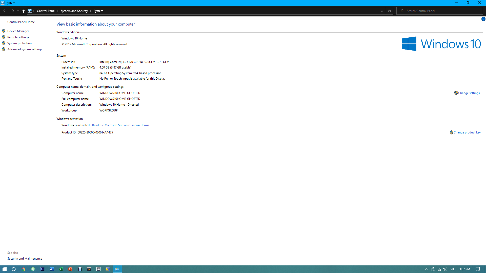
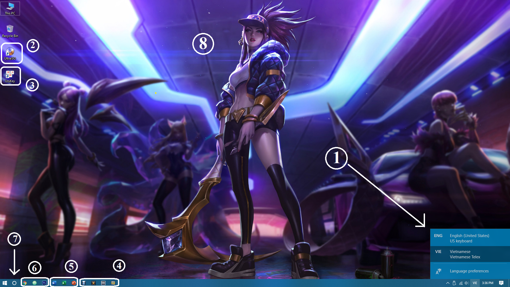
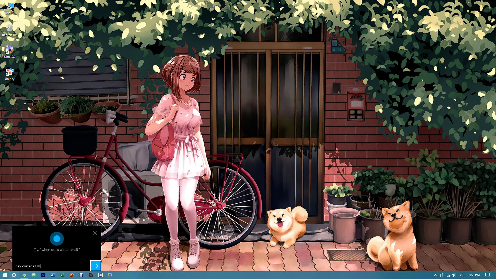
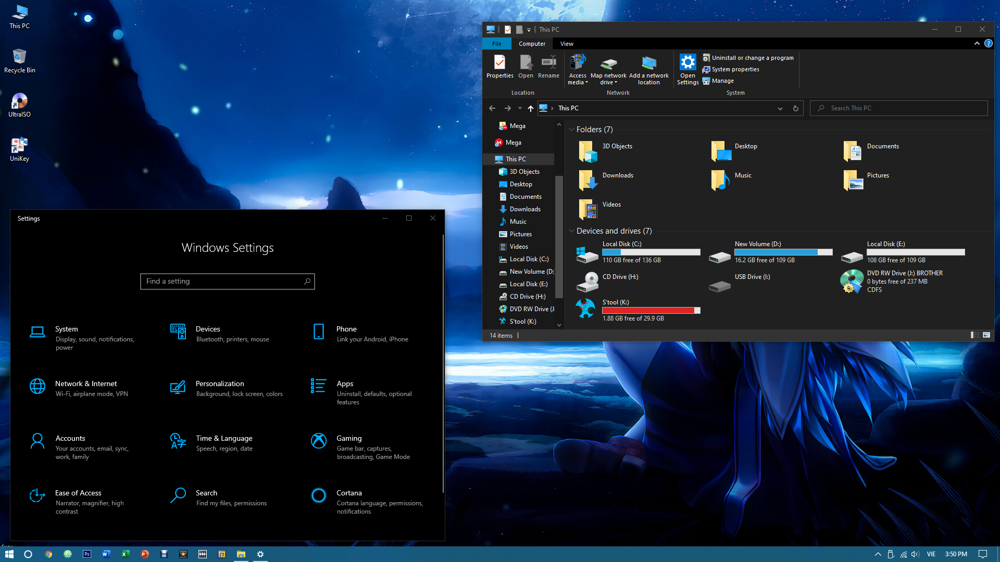
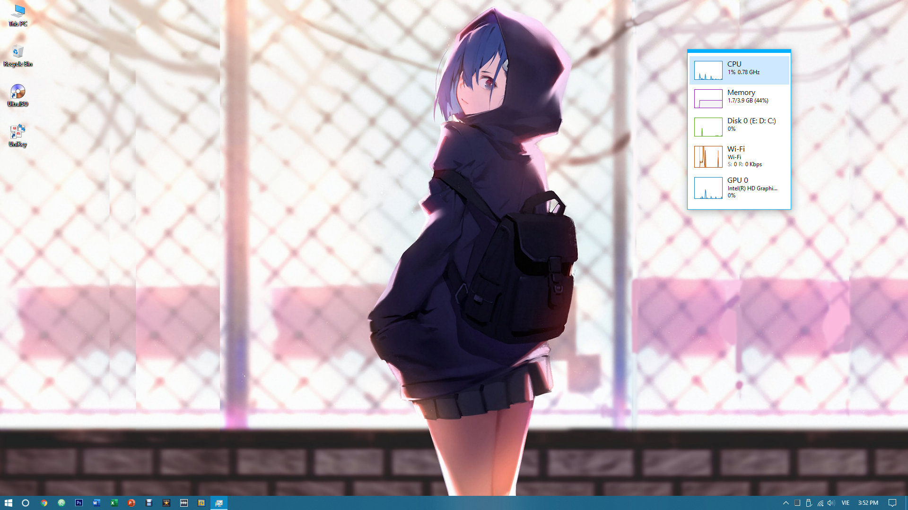
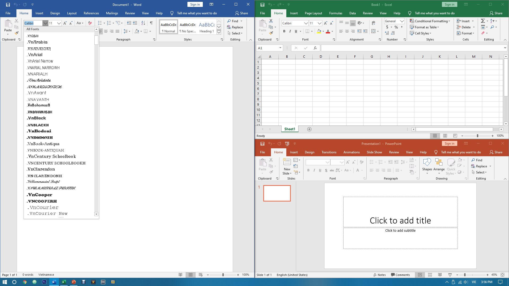
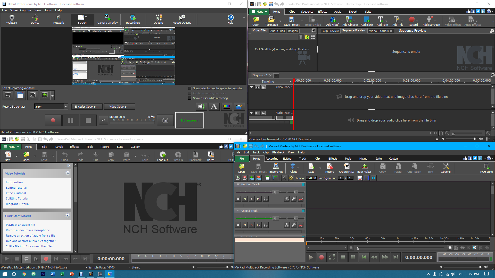
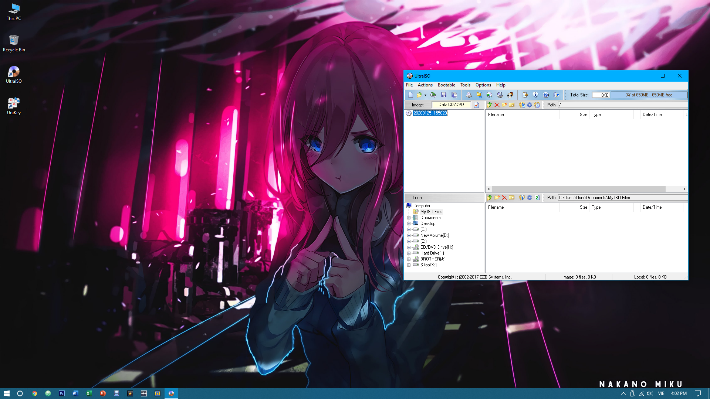
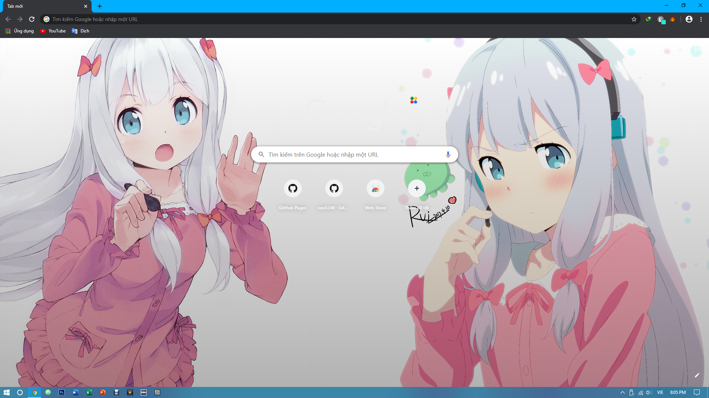
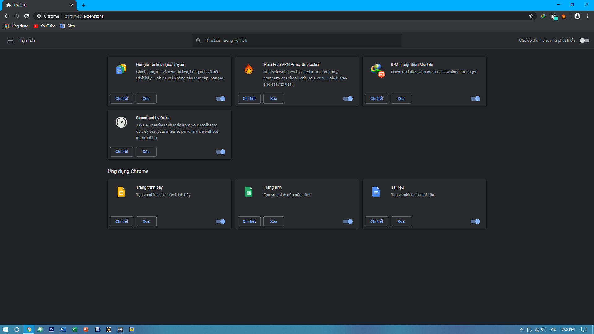
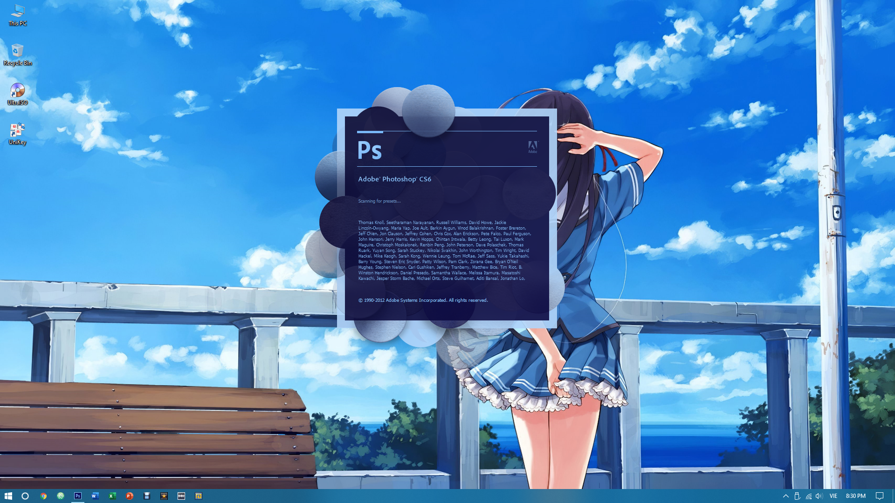
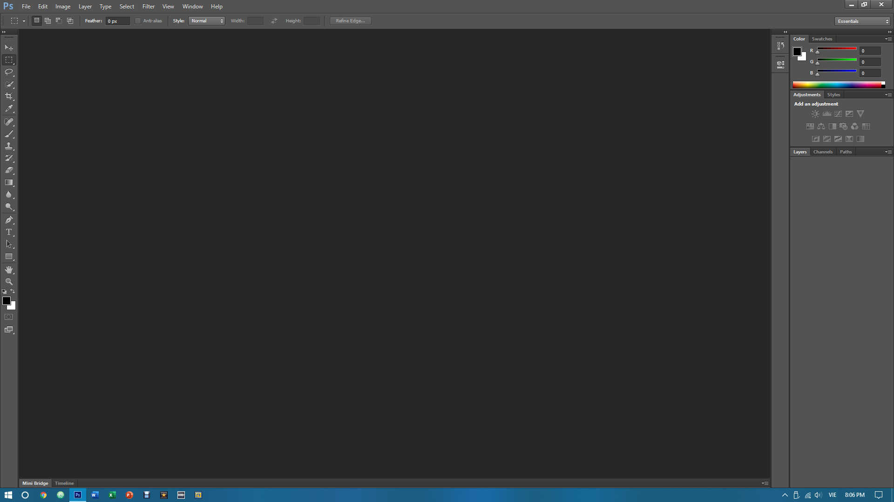
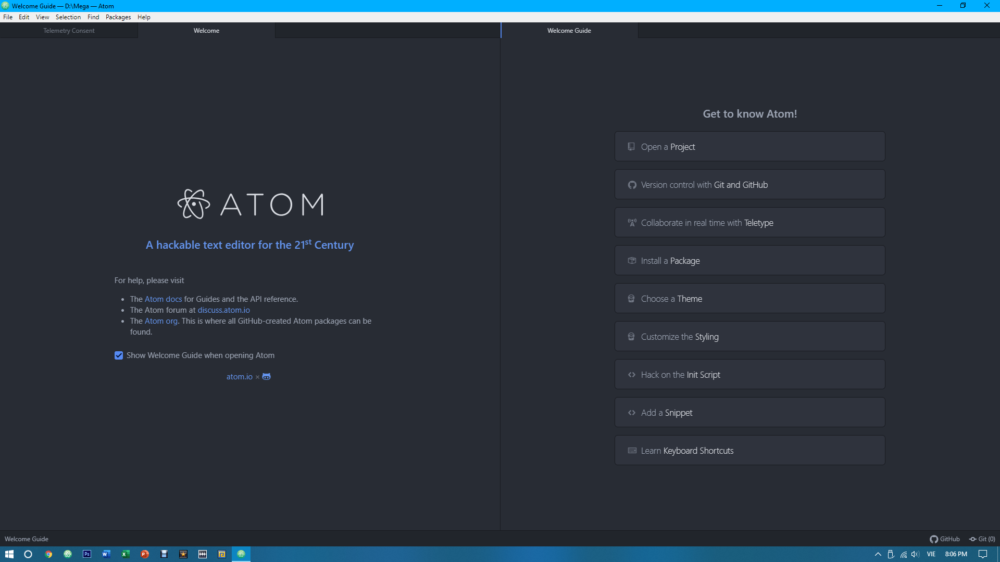
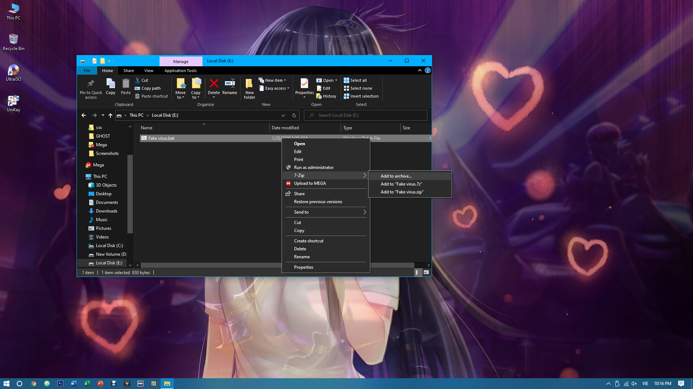
Bước 1.Boot vào môi trường Mini Windows.
Bước 2.Bung file ghost.
Bước 3.Ngồi chờ và hưởng lấy thành quả.